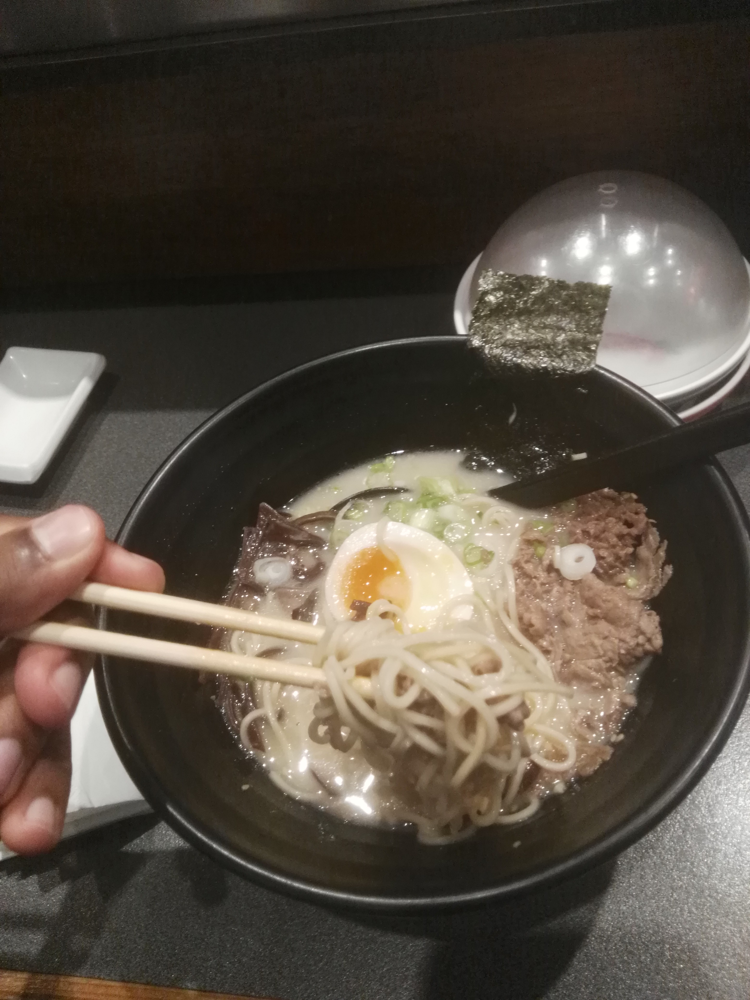
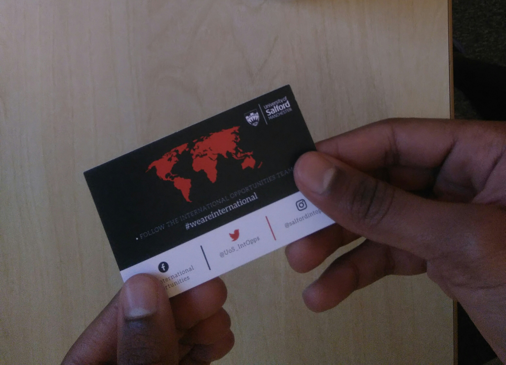
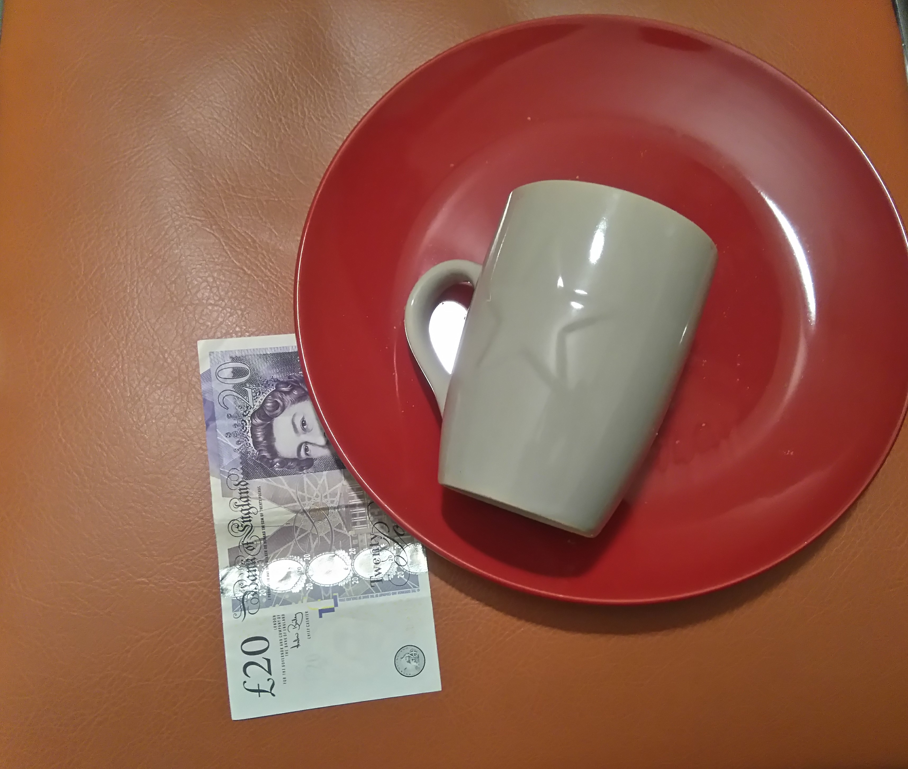

Japan has a dinstinct cultural identity , it's traditions and culture have been influenced by the cutting edge technology
and so they're a mix of both old and modern elements which makes Japan trully unique.
#1 Using chopsticks properly

It's important to know how to use chopsticks for eating different types of foods,
because it is believed to be closely related to your manners . Also, there is
a funeral tradition to leave a bowl of rice with the chopsticks placed to stand vertically,
so please bear in mind it is considered bad luck to do that while eating.
#2 Taking shoes off
Usually when you a visit a persons home they will require you to take your shoes off close to the front door .
In addition some restaurants and other places might too, it depends if there is a tatami mattress next to the front door.
#3 Business cards

It's crucial to have business cards when somebody owns a company or works for one,
because they're useful for introduction and you are expected to hand them over with two hands and a little bow
then the recipient will carefully read it before putting it in a pocket.
#4 Keeping quiet in public transports
You might think it is normal to talk while you are in a bus , but that is not true in Japan!
You should never at least talk loudly in a public transport like a bus or a train etc. because it
is considered rude and you should respect other people's silence.
#5 No tips

After you finish eating you might as well a leave a tip if you liked the food naturally
. However Japanese restaurants never accept tips as the cost for all services are included in the final price
. In Japan leaving a tip is an indirect message that the business must be unsuccessful and not well off and so needs extra money and support.